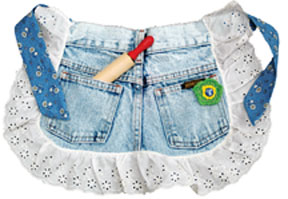

Here is an easy-to-make apron for the young cooks in your life. In fact, it is so easy it might be a good project for a child to make.
Just cut the back side from a pair of worn-out children’s jeans. Sew on whatever bric-a-brac you like and a long-enough sash to tie around the child’s waist. You could even thread the tie through the belt loops rather than sewing it on.
Pop a rolling pin in one pocket and a recipe in the other, and you have a fun and useful gift.
|
 MATTHEW T. STALLBAUMER You can create fun and funky aprons by recycling worn-out or outgrown jeans. |
|
|